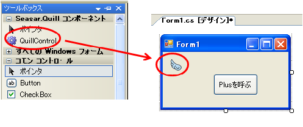
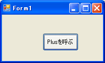

上へ
上へQuillを使うことにより簡単にDIやAOPを行うことができます。 Quillでは属性を用いてDIやAOPの設定を行います。 S2Container.NET 1.3.0から追加された機能です。
ステートレスな業務ロジックを構築するために作成された為、S2Container.NETに比べると機能が制限されています。 ただしS2Container.NETと連携してS2Container.NETに登録されているコンポーネントを利用する機能があります。


Quillを使うことにより簡単にDIやAOPを行うことができます。 Quillでは属性を用いてDIやAOPの設定を行います。 S2Container.NET 1.3.0から追加された機能です。
ステートレスな業務ロジックを構築するために作成された為、S2Container.NETに比べると機能が制限されています。 ただしS2Container.NETと連携してS2Container.NETに登録されているコンポーネントを利用する機能があります。
DIを行う為にはSeasar.Quill.QuillInjectorクラスのInjectメソッドに、DIを行わせたいオブジェクトを渡します。
QuillInjectorはInjectメソッドに渡されたオブジェクトのフィールドから自動的に判断して、 必要なオブジェクトをフィールドにバインドします。その際にあらかじめ設定ファイルでコンポーネントを登録しておく必要はありません。
QuillではQuillでインスタンスを管理するオブジェクトとS2Containerでインスタンスを管理するオブジェクトをDIすることができます。
Quillでインスタンスを管理するオブジェクトをDIする場合は、 フィールドの型にSeasar.Quill.Attrs.ImplementationAttributeクラスを属性として設定します。 Quillは設定された属性からバインドすべきと判断して自動的にバインドを行います。
DI対象となるフィールドのアクセス修飾子(可視性)は以下の通りです。
初めてバインドされるオブジェクトは新しくインスタンス化されますが、 一度バインドされたオブジェクトは以後同じインスタンスがバインドされることになります。 つまりQuillでバインドするためにインスタンス化されるオブジェクトは全てsingletonになります。 これはQuillがステートレスな業務ロジックを構築することを目的に作られたからです。
下記の例ではIEmployeeLogicインターフェースの実装クラスであるEmployeeLogicクラスを Form1のフィールドにバインドします。もしEmployeeLogicクラスがフィールドを持ち、 そのフィールドの型にImplementationAttributeクラスが属性として設定されていれば連鎖的にバインディングが行われていきます。
static class Program { [STAThread] static void Main() { Form1 form = new Form1(); QuillInjector injector = QuillInjector.GetInstance(); injector.Inject(form); ・・(略)・・ } } public partial class Form1 : Form { // IEmployeeLogicの実装クラスであるEmployeeLogicのインスタンスがバインドされる protected IEmployeeLogic employeeLogic; public Form1() { InitializeComponent(); } ・・(略)・・ } [Implementation(typeof(EmpployeeLogic))] public interface IEmployeeLogic { ・・(略)・・ } public class EmployeeLogic : IEmployeeLogic { ・・(略)・・ }
上記のようなインターフェースを用意せずに直接クラスのインスタンスをバインディングする場合は、 下記のようにImplementationAttributeクラスに引数を指定しません。
public partial class Form1 : Form { // EmployeeLogicのインスタンスがバインドされる protected EmployeeLogic employeeLogic; public Form1() { InitializeComponent(); } ・・(略)・・ } [Implementation] public class EmployeeLogic { ・・(略)・・ }
また下記のように引数無しのImplementationAttributeクラスをインターフェースに指定して、 Aspectで実装を持たせることもできます。
public partial class Form1 : Form { // Aspectによって拡張された型のインスタンスがバインドされる protected IEmployeeLogic employeeLogic; public Form1() { InitializeComponent(); } ・・(略)・・ } [Implementation] [Aspect(typeof(HogeInterceptor))] public interface IEmployeeLogic { ・・(略)・・ }
フィールドにSeasar.Quill.Attrs.BindingAttributeクラスが属性として指定されている場合は、 S2Containerでインスタンスを管理するオブジェクトをバインディングします。 BindingAttributeクラスの引数にはS2Containerのコンポーネント名を指定します。
下記の例ではS2Containerにコンポーネント名"empLogic"として定義されているコンポーネントのインスタンスを Form1のフィールドにバインドします。
static class Program { [STAThread] static void Main() { // 定義(dicon)ファイルをセットする SingletonS2ContainerFactory.ConfigPath = "App.dicon"; // S2Containerを初期化する SingletonS2ContainerFactory.Init(); Form1 form = new Form1(); QuillInjector injector = QuillInjector.GetInstance(); injector.Inject(form); ・・(略)・・ } } public partial class Form1 : Form { [Binding("empLogic")] protected IEmployeeLogic employeeLogic; public Form1() { InitializeComponent(); } ・・(略)・・ } public interface IEmployeeLogic { ・・(略)・・ } public class EmployeeLogic : IEmployeeLogic { ・・(略)・・ }
App.dicon
<?xml version="1.0" encoding="utf-8" ?> <!DOCTYPE components PUBLIC "-//SEASAR2.1//DTD S2Container//EN" "http://www.seasar.org/dtd/components21.dtd"> <components> <component name="empLogic" class="HogeNamespace.EmployeeLogic" /> </components>
QuillでAOPを利用する為にはSeasar.Quill.Attrs.AspectAttributeクラスを属性として設定します。 AspectAttributeクラスはクラス・インターフェース、メソッドに設定することができます。 ただしQuillによってインスタンス化されたオブジェクトにのみ設定が有効となります。
AspectAttributeクラスの第1引数にはInterceptorを指定します。 Quillでインスタンスを管理するInterceptorを指定する場合はInterceptorのTypeクラスを指定します。 S2Containerでインスタンスを管理するInterceptorを指定する場合はInterceptorのコンポーネント名を指定します。
クラス・インターフェースにAspectAttributeクラスを設定した場合は、 クラス・インターフェースに含まれるメソッドにAspectが適用されます。 ただしインターフェースに定義されたメソッド、virtualキーワードが指定されたメソッドが対象となります。
メソッドにAspectAttributeクラスを設定することでメソッド毎にAspectを適用することができます。 ただしインターフェースに定義されたメソッド、virtualキーワードが指定されたメソッドにしか設定することはできません。
Quillでインスタンスを管理するInterceptorを使用する場合は、 Seasar.Quill.Attrs.AspectAttributeクラスを属性として、 第1引数にInterceptorのTypeクラスを指定します。
Interceptorのインスタンスは必ずsingletonになります。
下記の例ではEmployeeLogicのGetEmployeeByEmpNoにAspectを適用します。 InterceptorのインスタンスはQuillで管理されます。
static class Program { [STAThread] static void Main() { Form1 form = new Form1(); QuillInjector injector = QuillInjector.GetInstance(); injector.Inject(form); ・・(略)・・ } } public partial class Form1 : Form { // EmployeeLogicのインスタンスがバインドされる protected EmployeeLogic employeeLogic; public Form1() { InitializeComponent(); } ・・(略)・・ } [Implementation] public class EmployeeLogic { [Aspect(typeof(ConsoleWriteInterceptor))] public virtual Employee GetEmployeeByEmpNo(int empNo) { Console.WriteLine("メソッドが呼び出されました"); } ・・(略)・・ } public class ConsoleWriteInterceptor : IMethodInterceptor { #region IMethodInterceptor メンバ public object Invoke(IMethodInvocation invocation) { MethodBase method = invocation.Method; Console.WriteLine("メソッドを開始します"); // 実際の処理を実行する object ret = invocation.Proceed(); Console.WriteLine("メソッドを終了します"); return ret; } #endregion }
EmployeeLogicのGetEmployeeByEmpNoをForm1から実行すると下記のようなメッセージがコンソールに出力されます。
メソッドを開始します メソッドが呼び出されました メソッドを終了します
S2Containerでインスタンスを管理するInterceptorを使用する場合は、 Seasar.Quill.Attrs.AspectAttributeクラスを属性として、 第1引数にInterceptorのコンポーネント名を指定します。
下記の例ではEmployeeLogicのGetEmployeeByEmpNoにAspectを適用します。 InterceptorのインスタンスはS2Containerで管理されます。
static class Program { [STAThread] static void Main() { // 定義(dicon)ファイルをセットする SingletonS2ContainerFactory.ConfigPath = "App.dicon"; // S2Containerを初期化する SingletonS2ContainerFactory.Init(); Form1 form = new Form1(); QuillInjector injector = QuillInjector.GetInstance(); injector.Inject(form); ・・(略)・・ } } public partial class Form1 : Form { // EmployeeLogicのインスタンスがバインドされる protected EmployeeLogic employeeLogic; public Form1() { InitializeComponent(); } ・・(略)・・ } [Implementation] public class EmployeeLogic { [Aspect("consoleInterceptor")] public virtual Employee GetEmployeeByEmpNo(int empNo) { Console.WriteLine("メソッドが呼び出されました"); } ・・(略)・・ } public class ConsoleWriteInterceptor : IMethodInterceptor { #region IMethodInterceptor メンバ public object Invoke(IMethodInvocation invocation) { MethodBase method = invocation.Method; Console.WriteLine("メソッドを開始します"); // 実際の処理を実行する object ret = invocation.Proceed(); Console.WriteLine("メソッドを終了します"); return ret; } #endregion }
App.dicon
<?xml version="1.0" encoding="utf-8" ?> <!DOCTYPE components PUBLIC "-//SEASAR2.1//DTD S2Container//EN" "http://www.seasar.org/dtd/components21.dtd"> <components> <component name="consoleInterceptor" class="HogeNamespace.ConsoleWriteInterceptor" /> </components>
EmployeeLogicのGetEmployeeByEmpNoをForm1から実行すると下記のようなメッセージがコンソールに出力されます。
メソッドを開始します メソッドが呼び出されました メソッドを終了します
Interceptorの作成方法はS2AOP.NETと同じです。下記のドキュメントを参照して下さい。
クラス・インタフェースに設定されたInterceptorは、メソッドに設定されたInterceptorより先に呼び出されます。 クラス・インターフェースに複数のAspectAttributeクラスが設定された場合、 もしくはメソッドに複数のAspectAttributeクラスが設定された場合は、 AspectAttributeクラスの第2引数に並び順を指定して呼び出される順番を制御することができます。 数字の小さい方が先に呼び出されます。第2引数を省略した場合は0が設定されたと判断します。 ただしメソッドに指定したInterceptorをクラス･インターフェースに設定されたInterceptorより先に呼び出すことはできません。
[Implementation] public class EmployeeLogic { [Aspect("consoleInterceptor", 1)] [Aspect(typeof(TraceInterceptor), 2)] public virtual Employee GetEmployeeByEmpNo(int empNo) { ・・(略)・・ } ・・(略)・・ }
QuillではS2Daoやトランザクションの設定も含めてdiconファイルを書かずに
属性を使用することでDI+AOPを利用することができます。
その利点は大まかに以下のものが挙げられます。
S2Dao.NETの機能を利用して検索、更新などのDBアクセスを行いたい場合は
S2Dao属性を使用します。
（必要な設定についてはこちらをご覧下さい）
S2Dao属性はクラス、インターフェース、メソッドに対して付けることができます。 それぞれのS2Dao(S2DaoInterceptor)の適用範囲は以下の通りです。
| 指定箇所 | 適用範囲 |
|---|---|
| クラス、インターフェース | クラス、インターフェース内の全てのメソッド(public以外も含む) |
| メソッド | 指定したメソッド(public以外も含む) |
// クラス、インターフェースに対して設定する場合
[Implementation]
[S2Dao]
[Bean(typeof(Hoge))]
public interface IHogeDao {
Employee GetHoge(int hogeNo); // S2DaoInterceptorが適用される
void Update(Hoge entity); // S2DaoInterceptorが適用される
}
// メソッドに対して設定する場合
[Implementation]
[Bean(typeof(Hoge))]
public interface IHogeDao {
[S2Dao]
Employee GetHoge(int hogeNo); // S2DaoInterceptorが適用される
void DoSomething(); // このメソッドにはS2DaoInterceptorは適用されない
}
S2Dao属性を引数なしで設定し、設定ファイルにも設定の記述がない場合
S2Daoの標準的な設定が使われます。
具体的には以下のクラスのインスタンスがQuill内で生成され使用されます。
独自に拡張した設定を使用する場合、
Seasar.Quill.Dao.IDaoSetting実装クラスを作成し
後述の方法でカスタム設定の適用範囲を定義します。
IDaoSettingは以下のプロパティ、メソッドをもっています。
| プロパティ名 | 説明 | 戻り値Null |
|---|---|---|
| DaoMetaDataFactory | IDaoMetaDataFactory実装クラス | ×不可 |
| DaoInterceptor | IMethodInterceptor実装クラス | ×不可 |
| DataSourceName | 使用するデータソース名 （設定ファイルのdataSourceタグで設定したもの） | ○可能 |
| メソッド名 | 説明 |
|---|---|
| Setup | S2DaoInterceptorなどの設定などを行う |
| IsNeedSetup | Setupメソッドを呼ぶかどうかを返す |
※Seasar.Quill.Dao.Impl.AbstractDaoSetting（IDaoSettingを実装する抽象クラス）を使うと
プロパティの定義とIsNeedSetupの実装を省略できます。
AbstractDaoSettingを継承した実装例
/// <summary>
/// 一般的なDaoSetting実装クラス
/// </summary>
public class TypicalDaoSetting : AbstractDaoSetting
{
protected override void SetupDao(IDataSource dataSource)
{
BasicCommandFactory commandFacoty = new BasicCommandFactory();
BasicDataReaderFactory dataReaderFactory =
new BasicDataReaderFactory(commandFacoty);
FieldAnnotationReaderFactory annotationReaderFactory =
new FieldAnnotationReaderFactory();
_daoMetaDataFactory = new DaoMetaDataFactoryImpl(
dataSource, commandFacoty, annotationReaderFactory, dataReaderFactory);
_daoInterceptor = new S2DaoInterceptor(_daoMetaDataFactory);
}
}
「quill」セクション内に「daoSetting」タグを
記述し、その中に作成した設定クラスを名前空間付で書きます(「"」は不要）。
<quill>
<!-- S2Dao設定 -->
<daoSetting>Hoge.CustomDaoSetting</daoSetting>
<!-- (他設定は省略) -->
</quill>
S2Dao属性の引数にtypeof(カスタム設定クラス)の戻り値を渡します。
[Implementation]
[Bean(typeof(Hoge))]
public interface IHogeDao
{
[S2Dao(typeof(CustomDaoSetting))]
Hoge GetHoge(int hogeNo);
}
※S2Dao属性に渡した型のインスタンスはQuillコンテナの中に一つしか作られませんが
SetupメソッドはIsNeedSetupの戻り値がtrueであれば設定されたS2Dao属性の数だけ呼ばれます。
S2Daoの設定は以下の優先順で適用されます。
トランザクションをかける箇所を指定したい場合は
Transaction属性を使用します。
Transaction属性はクラス、インターフェース、メソッドに対して付けることができます。
トランザクションが適用されたメソッドは、呼び出された時点でトランザクションを開始し、正常終了でコミット、例外終了でロールバックとなります。
それぞれのトランザクション(TransactionInterceptor)の適用範囲は以下の通りです。
| 指定箇所 | 適用範囲 |
|---|---|
| クラス、インターフェース | クラス、インターフェース内の全てのメソッド(public以外も含む) |
| メソッド | 指定したメソッド(public以外も含む) |
※全てのメソッドに属性を付けることと、クラス、インターフェースに付けることは等価です。
// クラス、インターフェースに対して設定する場合
[Implementation]
[Transaction]
public class HogeBhv {
// トランザクションが適用される
public virtual Employee GetHoge(int hogeNo) {
(省略)
}
// トランザクションが適用される
public virtual void Update(Hoge entity) {
(省略)
}
}
// メソッドに対して設定する場合
[Implementation]
public class HogeBhv {
// トランザクションが適用される
[Transaction]
public virtual void Update(Hoge entity) {
(省略)
}
// このメソッドにはトランザクションは適用されない
public void DoSomething() {
(省略)
}
}
トランザクションは AOP を利用しますので、「AOP利用の注意点」を必ずお読み下さい 特に、virtual キーワードの定義し忘れにご注意下さい。
// クラスに対して設定する場合
[Implementation]
[Transaction]
public class HogeBhv {
// virtual が付いている
public virtual void Update(Hoge entity) { // トランザクションが適用される
...
}
// virtual が無い
public void DoSomething() { // このメソッドにはトランザクションは適用されない
...
}
}
// クラスのメソッドに対して設定する場合
[Implementation]
public class HogeBhv {
[Transaction] // virtual が付いている
public virtual void Update(Hoge entity) { // トランザクションが適用される
...
}
[Transaction] // virtual が無い
public void DoSomething() { // このメソッドにはトランザクションは適用されない
...
}
}
Transaction属性を引数なしで設定し、設定ファイルにも設定の記述がない場合
S2Daoにおけるトランザクションの標準的な設定が使われます。
具体的には以下のクラスのインスタンスがQuill内で生成され使用されます。
独自に拡張した設定を使用する場合、
Seasar.Quill.Database.Tx.ITransactionSetting実装クラスを作成し
後述の方法でカスタム設定の適用範囲を定義します。
ITransactionSettingは以下のプロパティ、メソッドをもっています。
| プロパティ名 | 説明 | 戻り値Null |
|---|---|---|
| TransactionContext | ITransactionContext実装クラス | ×不可 |
| TransactionInterceptor | IMethodInterceptor実装クラス | ×不可 |
| メソッド名 | 説明 |
|---|---|
| Setup | TransactionInterceptorなどの設定などを行う |
| IsNeedSetup | Setupメソッドを呼ぶかどうかを返す |
※Seasar.Quill.Database.Tx.Impl.AbstractTransactionSetting
（ITransactionSettingを実装する抽象クラス）を使うと
プロパティの定義とIsNeedSetupの実装を省略できます。
AbstractTransactionSettingを継承した実装例
/// <summary>
/// 一般的なトランザクションの設定クラス
/// </summary>
public class TypicalTransactionSetting : AbstractTransactionSetting
{
protected override void SetupTransaction(IDataSource dataSource)
{
// TransactionContext
_transactionContext = new TransactionContext();
TransactionContext txContext = (TransactionContext)_transactionContext;
txContext.DataSouce = dataSource;
txContext.IsolationLevel = IsolationLevel.ReadCommitted;
// TransactionContextを使用するデータソースにも設定
Type dataSourceType = dataSource.GetType();
if (typeof(SelectableDataSourceProxyWithDictionary).IsAssignableFrom(
dataSourceType))
{
((SelectableDataSourceProxyWithDictionary)dataSource)
.SetTransactionContext(txContext);
}
else if (typeof(TxDataSource).IsAssignableFrom(dataSourceType))
{
((TxDataSource)dataSource).Context = txContext;
}
// TransactionInterceptor
LocalRequiredTxHandler handler = new LocalRequiredTxHandler();
handler.Context = txContext;
_transactionInterceptor = new TransactionInterceptor(handler);
((TransactionInterceptor)_transactionInterceptor).TransactionStateHandler
= txContext;
}
}
「quill」セクション内に「transactionSetting」タグを
記述し、その中に作成した設定クラスを名前空間付で書きます(「"」は不要）。
<quill>
<!-- Transaction設定 -->
<transactionSetting>Hoge.CustomTransactionSetting</transactionSetting>
<!-- (他設定は省略) -->
</quill>
Transaction属性の引数にtypeof(カスタム設定クラス)の戻り値を渡します。
[Implementation]
public class HogeBhv
{
[Transaction(typeof(CustomTransactionSetting))]
public virtual void Update(Hoge entity) {
// (省略)
}
}
※Transaction属性に渡した型のインスタンスはQuillコンテナの中に一つしか作られませんが
SetupメソッドはIsNeedSetupの戻り値がtrueであれば設定されたTransaction属性の数だけ呼ばれます。
Transactionの設定は以下の優先順で適用されます。
Seasar.Quill.QuillInjectorクラスのInjectメソッドを用いてDIを行ってきましたが、 ツールボックスからコントロール（Seasar.Quill.QuillControl）をFormに貼り付けるだけで簡単にDIを利用することもできます。
Seasar.Quill.QuillControlを使う場合はツールボックスに登録する必要があります。 「ツールボックスアイテムの選択」からSeasar.Quill.dllを選択してください。
下記はForm1のフィールドにCulcLogicをバインドする例です。
Public partial class Form1 : Form { protected CulcLogic culcLogic = null; private void button1_Click(object sender, EventArgs s) { int ret = culcLogic.Plus(1, 2); Console.WriteLine(“戻り値：” + ret); } } [Implementation] Public class CulcLogic { [Aspect(typeof(ConsoleWriteInterceptor))] public virtual int Plus(int x, int y) { Console.WriteLine(“Plusが呼ばれました”); return x + y; } }
次にデザイナでQuillControlをForm1に貼り付けます。

これでフィールドのculcLogicにAspectが適用されたインスタンスがDIされるようになります。 実行して「Plusを呼ぶ」ボタンを押すとコンソールにメッセージが出力されます。

メソッドを開始します Plusが呼ばれました メソッドを終了します 戻り値：3
バインドされるために Quill によってインスタンス化されたオブジェクトのインスタンスは、 singleton として保持されます。 バインドされるためにインスタンス化されたオブジェクトが System.IDisposable インターフェースを実装している場合は Quill から Dispose メソッドを呼び出すことができます。
以下のように QuillInjector の Dispose メソッドを呼び出して、アンマネージ リソースを解放します。
QuillInjector.GetInstance().Dispose();
バインドされるために Quill によってインスタンス化されたオブジェクトのインスタンスは、 singleton として保持されます。 しかし Quill が保持するオブジェクトの参照を破棄することができます。
以下のように QuillInjector の Destroy メソッドを呼び出して、Quill が保持するオブジェクトの参照を破棄します。 破棄するオブジェクトが System.IDisposable を実装している場合は参照を破棄する前に Dispose メソッドが呼び出されます。
QuillInjector.GetInstance().Destroy();
テストコードでリモートの処理を呼び出す部分等を Mock に置き換えたい場合があります。 そんな場合には QuillInjector の代わりに Seasar.Quill.Unit.MockInjector を使います。
通常はインターフェースに Implementation 属性で実装クラスを指定しますが、 同じように Mock 属性(Seasar.Quill.Attrs.MockAttribute)で Mock クラスを指定することができます。 MockInjector を使用すると Mock 属性で Mock クラスが指定されている場合に、 Implementation 属性より優先して Mock クラスを Inject します。 Mock 属性が指定されていない場合は QuillInjector と同じ動作をします。
以下はサンプルです。
[Implementation(typeof(RemoteLogic))] [Mock(typeof(MockRemoteLogic))] public interface IRemoteLogic { string ExecuteRemote(); } public class MockRemoteLogic : IRemoteLogic { public string ExecuteRemote() { return "Mock です。"; } } public class CallRemoteLogic { protected IRemoteLogic remoteLogic; public string CallRemote() { return remoteLogic.ExecuteRemote(); } }
以下はテストクラスです。MockInjector を使っている為、Mock が使われます。
// CallRemoteLogic のテストクラス [TestFixture] public class CallRemoteLogicTest { // CallRemoteメソッドのテスト [Test] public void TestCallRemote() { CallRemoteLogic logic = new CallRemoteLogic(); MockInjector.GetInstance().Inject(logic); string ret = logic.ExecuteRemote(); Assert.AreEqual("Mock です。", ret); } }
MockInjector はもっともシンプルな QuillInjector のカスタマイズ例でもあります。 Quill(QuillInjector) はシンプルで機能が限定的です。 もし QuillInjector をカスタマイズしたいと考えた場合は MockInjector の実装を参考にしてください。